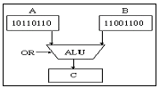
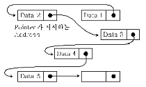
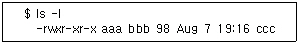
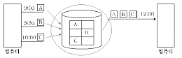
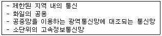

정보처리산업기사 (1999-10-10 기출문제)
1과목: 데이터 베이스
1. 데이터 무결성과 가장 관계가 깊은 것은?
- 데이터의 안전성
- 데이터의 공유성
- 데이터의 중복성
- 데이터의 정확성
(정답률: 56%)

2. 데이터베이스 관리 시스템(DBMS)의 기능이 아닌 것은?
- 시스템의 보안
- 데이터의 무결성 관리
- 디스크로 부터 자료 검색
- 질의문의 변환
(정답률: 30%)
3. 뷰(view)에 대한 설명 중 가장 거리가 먼 것은?
- 뷰는 원칙적으로 하나 이상의 기본 테이블로부터 유도된 이름을 가진 가상 테이블을 말한다.
- 기본 테이블은 물리적으로 구현되어 데이터가 실제로 저장되지만 뷰는 물리적으로 구현되어 있지 않다.
- 뷰는 근본적으로 기본 테이블로부터 유도되지만 일단 정의된 뷰가 또 다른 뷰의 정의에 기초가 될 수도 있다.
- 뷰의 정의만 시스템 내에 저장하였다가 필요시 실행시간에 테이블을 구축하므로 시스템 검색에 있어서 뷰와 기본 테이블 사이에 약간의 차이가 있다.
(정답률: 58%)
4. 어떤 릴레이션 R이 2NF를 만족하면서 키에 속하지 않는 모든 애트리뷰트가 기본 키에 대하여 이행적 함수 종속이 아니면 어떤 정규형에 해당하는가?
- 제 1정규형
- 제 2정규형
- 제 3정규형
- 제 1, 2, 3정규형
(정답률: 47%)
5. 키 값을 여러 부분으로 분류하여 가 부분을 더하거나 XOR 하여 주소를 해싱 함수의 종류는 ?
- 제산(divide)함수
- 접지(folding) 함수
- 중간제곱(mid-square) 함수
- 숫자 분석 함수
(정답률: 61%)
6. 데이터베이스에서 아직 알려지지 않거나 모르는 값으로서 해당 없음 등의 이유로 정보 부재를 나타내기 위해 사용하는 특수한 데이터 값을 무엇이라 하는가?
- 원자값(atomic value)
- 참고값(reference vakue)
- 무결값(integrity value)
- 널값(null value)
(정답률: 88%)
7. 정렬 방법 중 보조기억장치를 이용하는 것은?
- 버블(bubble) 정렬
- 셀랙션(selection) 정렬
- 퀵(quick) 정렬
- 균형 합병(balanced merge) 정렬
(정답률: 19%)
8. 데이터베이스 관리자(DBA)의 역할 중 거리가 언 것은?
- 사용자의 요구와 불평을 해결
- 시스템 감시 및 성능 분석
- 데이터베이스 설계와 운영
- 정보추출을 위한 데이터베이스 접근
(정답률: 45%)
9. 인덱스된 순차파일에서 인덱스와 순차 데이터 파일을 구성하는 방법으로는 정적인덱스 방법과 동적인덱스 방법이 있다. 이에 관한 설명으로 옳지 않은 것은?
- 정적 인덱스 방법에서는 데이터 파일의 레코드가 삽입되거나 삭제됨에 따라 인덱스의 내용은 변하지만 구조자체는 변하지 않는다.
- 동적 인덱스 방법에서는 블록이 가득차면 동적으로 분열되고, 일정 수의 레코드가 유지되지 않는 블록은 합병된다.
- 동적 인덱스 방법은 인덱스 부분과 데이터 부분을 별개의 파일로 분리하여 구성하고 정적 인덱스 방법은 두 부분을 하나의 파일로 구성한다.
- 정적 인덱스 방법은 마스터 인덱스, 실린더 인덱스. 트랙 인덱스로 구성되고, 데이터 파일은 기본구역과 오버플로우 구성으로 구성된다.
(정답률: 24%)
10. SQL 언어의 질의 기능에 대한 설명 중 옳지 않은 것은?
- SELECT 절은 질의 결과에 포함될 데이터 행들을 기술하며, 이는 데이터베이스로부터 데이터 행 또는 계산 행이 될 수 있다.
- FROM 절은 질의에 의해 검색될 데이터들을 포함하는 테이블을 기술한다.
- 복잡한 탐색조건을 구성하기 위하여 단순 탐색조건들을 AND, OR, NOT으로 결합할 수 있다.
- ORDER BY 절은 질의 결과가 한 개 또는 그 이상의 열값을 기준으로 오름차순 또는 내림차순으로 정렬될 수 있도록 기술된다.
(정답률: 42%)
11. 데이트베이스 모델의 개념과 관계가 먼 것은?
- 데이터 모델은 추상화를 제공하기 위해 사용된다.
- 데이터베이스의 구조를 묘사하기 위해 사용되는 개념들의 집합이다.
- 데이터베이스의 구조는 데이터의 타입, 데이터 간의 관계, 데이터를 유지하기 위해 필요 제약들을 의미 한다.
- 대부분의 데이터베이스 사용자의 관심밖에 존재하는 저장소의 상세한 내용들을 사용자에게 공개한다.
(정답률: 75%)
12. 관계 모델에서의 무결성을 제약하는 방법으로, 기본 키의 값은 널(null)일 수 없다는 무결성 조건은?
- 개체 무결성
- 참고 무결성
- 도메인 제약 조건
- 함수적 종속
(정답률: 76%)
13. 데크(deque)에 관한 설명으로 옳지 않은 것은?
- 삽입과 삭제가 양쪽 끝에서 일어난다.
- 스택과 큐를 복합한 형태이다.
- 사용하는 포인터는 한 개다.
- 입력제한 테크를 scoll이라고 한다.
(정답률: 85%)
14. 데이터 언어는 사용 목적에 따라 세가지로 나누어지는데 그 중 테이블이나 뷰를 구축 또는 삭제하는 기능을 가진 것은?
- 절차적 데이터 조작어
- 비절차적 데이터 조작어
- 데이터 정의어(DDL)
- 데이터 제어어(DCL)
(정답률: 62%)
15. DBMS 모델의 종류가 아닌 것은?
- 계층 모델
- 관계 모델
- 링크 모델
- 객체 지향 모델
(정답률: 64%)
16. 컴퓨터내의 연산시 숫자자료를 보수(complement)로 표현하는 이유는?
- 음수를 표현하기 쉽다.
- 실수를 표현하기 쉽다.
- 덧셈과 뺄셈을 덧셈 회로로 처리할 수 있다.
- 수를 표현하는 저장장치를 절약할 수 있다.
(정답률: 55%)
17. 데이터베이스 관리 시스템(DBMS)의 장점으로 거리가 먼 것은?
- 데이터의 중복을 최소화할 수 있다.
- 데이터의 일관성을 유지할 수 있다.
- 표준화를 기할 수 있다.
- 예비(backup)와 회복(recovery) 기법이 간단하다.
(정답률: 78%)
18. 물리적 데이터베이스 설계시 고려사항으로 가장 거리가 먼 것은?
- 레코드의 크기
- 파일에 대한 트랜잭션의 갱신과 참조 성향
- 수행될 질의롸 트랜잭션의 예상 빈도
- 인덱스의 구조
(정답률: 34%)
19. 개체 집합에 대한 속성 관계를 표현하기 위해 개체를 테이블(table)로 사용하고 개체 집합들 사이의 관계를 공통속성으로 연결하는 독립된 형태의 데이터 모델은?
- 망 데이터 모델
- 계층 데이터 모델
- 관계 데이터 모델
- 객체 지향 데이터 모델
(정답률: 47%)
20. 데이터베이스 구조에 전반적으로 기술한 것을 스키마라고 하나 3층 스키마에 해당하지 않는 것은?
- 외부 스키마
- 개념 스키마
- 논리 스키마
- 내부 스키마
(정답률: 78%)
2과목: 전자 계산기 구조
21. 메모리로부터 읽은 내용이 오퍼랜드(operand)의 번지일 경우 컴퓨터의 사이클(cycle)은?
- 인터럽트 사이클
- 페치 사이클
- 실행 사이클
- 간접 사이클
(정답률: 38%)
22. 프로그램 카운터가 명령의 번지 부분과 더해져서 유효 번지가 결정되는 주소 지정 방식은?
- 상대 번지 모드(mode)
- 간접 번지 모드(mode)
- 인덱스드 어드레싱 모드(indexed addressing mode)
- 베이스(bass) 레지스터 어드레싱 모드
(정답률: 62%)
23. 레지스터 R1에 있는 내용을 왼쪽으로 2비트 시프트 시키는 기능과 관계있는 것은?
- 제어 기능
- 연산 기능
- 전송 기능
- 레지스터 기능
(정답률: 64%)
24. 프로그램 카운터(PC)에 대한 설명 중 옳은 것은?
- 프로그램을 카운트하여 +1씩 증가한다.
- 프로그램 데이터를 저장한다.
- 명령을 저장한다.
- 실행을 기다리는 명령의 번지를 저장한다.
(정답률: 59%)
25. 가상(Virtual) 메모리에서 페이ㅣ 교체(Replacement) 알고리즘에 해당하는 것은?
- Write-through 알고리즘
- 매치(match) 알고리즘
- Write-back 알고리즘
- First In First Out(FIFO) 알고리즘
(정답률: 30%)
26. 중앙처리장치에서 사용되는 레지스터(register)의 종류가 아닌 것은?
- Accumulator
- Program Counter
- Instruction Register
- Full Adder
(정답률: 77%)
27. 계산 도중 연산장치에서 계산된 중간 결과를 보존하는 곳은?
- address register
- accumulator
- parallel adder
- instruction register
(정답률: 64%)
28. 인스트럭션의 연산자 부분이 나타낼 수 있는 것으로 옳지 않은 것은?
- 인스트럭션의 순서
- 인스트럭션의 형식
- 자료의 종류
- 연산자
(정답률: 15%)
29. 다음 코드 중에서 통신 및 마이크로컴퓨터에서 많이 채택되고 있는 코드는?
- BCD 코드
- Hamming 코드
- EBCDIC 코드
- ASCLL 코드
(정답률: 50%)
30. ROM에 대한 설명 중 옳지 않은 것은?
- 기억된 내용을 임의로 변경시킬 수 없다.
- 사용자가 작성한 Program이나 data를 기억시켜 처리하기 위해 사용하는 memory이다.
- Read만이 가능하다.
- Micro instruction을 내장하고 있다.
(정답률: 54%)
31. 64가지의 각기 다른 자료를 나타내려고 하면 최소한 몇 개의 비트(bit)가 필요한가?
- 1
- 3
- 5
- 6
(정답률: 74%)
32. Compiler Language나 Assembly Language로 작성된 프로그램을 자칭할 때 무엇이라 하는가?
- Assembler
- Object Program
- Source Program
- Operating System Program
(정답률: 34%)
33. 여러개의 CPU(중앙처리장치)를 가지고 동시에 많은 일을 처리 하는 것을 무엇이라 하는가?
- Multiprocessing
- Multiprogramming
- Multiaccessing
- Multitasking
(정답률: 63%)
34. 단항(unary) 연산을 행하는 것은?
- SHIFT
- AND
- OR
- 4칙 연산
(정답률: 57%)
35. 중앙처리장치(CPU)의 기능이 아닌 것은?
- 기억 기능
- 연산 기능
- 제어 기능
- 입력 기능
(정답률: 40%)
36. 아래 그림과 같이 A, B 레지스터에 있는 2개의 자료에 대해 ALU에 의한 OR 연산이 이루어 졌을 때 그 결과가 출력되는 C 레지스터의 내용은?

- 10000000
- 10110110
- 11111110
- 11101110
(정답률: 70%)
37. parity bit의 기능으로 옳은 것은?
- error 검출용 비트이다.
- bit 위치에 따라 weight 값을 갖는다.
- BCD code에서만 사용한다.
- error bit이다.
(정답률: 85%)
38. 원격단말장치에서 host와 terminal에 각 각 필수적으로 요구되는 것은?
- ,MODEN
- DASD
- STACKER
- CIL
(정답률: 56%)
39. 프로그램 제어에 관한 명령이 아닌 것은?
- 브렌치(branch)
- 콜(call), 리턴(Return)
- 인터럽트에 관한 명령
- 논리연산
(정답률: 46%)
40. 인터럽트 회선에 대하여 우선순위를 배정하는 일차적 목적은?
- 인터럽트 루틴 어드레스를 선택한다.
- 어느 인터럽트가 가장 자주 사용 하는가 결정한다.
- 인터럽트가 하나 이상 발생 할 때 어느 것이 선택 되어야 하는가를 지적한다.
- 마이크로프로세서가 하나 이상의 인터럽트 루틴을 동시에 실행하는 것을 방지한다.
(정답률: 30%)
3과목: 시스템분석설계
41. 시스템 개발 초기에 사용자의 요구 기능을 시제품으로 만들어 사용자로 하여금 기능과 사용성 등에 대해 검증시켜 가면서 시스템을 개발하는 기법은?
- 프로토타입 모델(Prototype model)
- 나선형 모델(Spiral model)
- 폭포수 모델(Waterfall model)
- 구조적 모델(Structured model)
(정답률: 68%)
42. 시스템의 신뢰성 평가를 위한 검토 항목으로 관계가 먼 것은?
- 시스템 전체의 가동률
- 시스템을 구성하는 각 요소의 신뢰도
- 신뢰성 향상을 위해 시행한 처리의 경제 효과
- 업무 프로그램의 사용 언어
(정답률: 82%)
43. 입력설계시에 제일 먼저 설계하는 항목은?
- 입력내용에 관한 설계
- 입력매체에 관한 설계
- 입력 투입에 관한 설계
- 입력 정보수집 설계
(정답률: 55%)
44. 모듈(module)의 독립성을 높이기 위한 방법은?
- 모듈간의 결합도는 최소화, 모듈내 요소들 간의 응집력은 최대화
- 모듈간의 결합도 및 모듈내의 요소들간의 응집력을 최소화
- 모듈간의 결합도는 최대화, 모듈내 요소들 간의 응집력은 최소화
- 모듈간의 결합도 및 모듈내 요소들간의 응집력을 최대화
(정답률: 69%)
45. 결합 테스트의 테스트 데이터 작성에 관한 설명 중 가장 적합한 것은?
- 시스템의 이용자는 현업이기 때문에 현업 담당자가 작성하는 것이 바람직하다.
- 시스템의 단계별 기능을 테스트하는 것이므로 시스템 분석자가 작성하는 것이 바람직하다.
- 프로그램의 오류를 찾기 위해 프로그램을 작성한 프로그래머가 작성하는 것이 바람직하다.
- 시스템을 운영할 오퍼레이터가 작성하는 것이 바람직하다.
(정답률: 62%)
46. 코드 앞자리 2글자는 학과, 그 다음 4자리는 입학년도, 다음 3자리는 일련번호와 같이 부여되는 코드는?
- 구분 코드
- 그룹 분류 코드
- 일련번호 코드
- 기호 코드
(정답률: 66%)
47. HIPO는 시스템의 구조를 기능 중심으로 어떤 방법을 사용하여 나타내는가?
- top-down
- bottom-up
- left-recursive
- right-left
(정답률: 47%)
48. 그림과 같이 관련되는 데이터 레코드들이 물리적으로는 떨어져 있으나 데이터 레코드에 포함되어 있는 포인터가 순차적으로 데이터 레코드가 저장되어 있는 주소를 지시함으로써 데이터 구조관계를 유지하는 파일 편성방법은?

- 순차 편성방법(sequential organization)
- 색인순차 편성방법(indexed sequential organization)
- 랜덤 편성방법(random organization)
- 리스트 편성방법(list organization)
(정답률: 20%)
49. 문서화의 근본 목적이 아닌 것은?
- 시스템의 개발 요령과 순서를 표준화 한다.
- 개발 후에 시스템의 유지 보수가 용이하다.
- 시스템 개발 중 추가 변경에 따른 혼란을 방지한다.
- 시스템 개발의 업적을 남긴다.
(정답률: 75%)
50. 구조적 분석 도구에 해당되지 않는 것은?
- 자료흐름도
- 미니명세서
- 자료사전
- 자료계획서
(정답률: 28%)
51. 자료 흐름도(DFD : Data flow diagram)의 구성 요소가 아닌 것은?
- 시작점/종착점
- 입/출력
- 자료 흐름
- 데이터 저장소
(정답률: 36%)
52. 모듈 결합도가 높은 것에서부터 낮은 순서대로 바르게 나열된 것은?
- 내용결합도→제어결합도→공통결합도→자료결합도
- 내용결합도→외부결합도→스탬프결합도→제어결합도
- 내용결합도→공통결합도→스탬프결합도→자료결합도
- 자료결합도→스탬프결합도→제어결합도→내용결합도
(정답률: 63%)
53. 캡슐화(encapsulation)와 정보 은닉 (information hidden)의 가장 큰 장점은?
- 분석의 용이성
- 유지보수 용이성
- 접근 용이성
- 개발 용이성
(정답률: 43%)
54. 입력 자료의 어떤 항목 내용이 논리적으로 정해진 범위내에 있는가를 체크하는 방법은?
- 유효 범위 체크(Limit check)
- 체크 디지트 체크(Check digit check)
- 형식 체크(Format check)
- 균형 체크(Balance check)
(정답률: 74%)
55. 색인순차 편성화일(indexed sequential file)의 각 구역 중 일정한 크기의 불록으로 불록화하여 처리할 킷값을 갖는 레코드가 어느 실린더 인덱스 상에 기록되어 있는가를 나타내는 정보가 수록된 구역은?
- 마스터 인덱스 구역
- 실린더 인덱스 구역
- 트랙 인덱스 구역
- 기본 데이터 구역
(정답률: 50%)
56. 객체지향 개념에서 이미 정의되어 있는 상위 클래스(슈퍼 클래스 혹은 부모 클래스)의 메소드를 비롯한 모든 속성을 하위 클래스가 물려받는 것을 무엇이라 하는가?
- abstractio
- method
- inheritance
- message
(정답률: 60%)
57. HIPO의 구성에 포함되지 않는 것은?
- 도식 목차(visual table of contents)
- 총괄 도표(overview diagram)
- 상세 도표(detail diagram)
- 구조 도표(structure diagram)
(정답률: 54%)
58. 시스템 구성의 기본 요소에 해당되지 않는 것은?
- Processing
- Control
- Feed back
- Memory
(정답률: 69%)
59. 코드의 기입 과정에서 원래는 1996으로 기입되어야 하는데 오기를 하여 1969로 표기되었다고 할 때, 어느 Error에 해당하는가?
- Transcription Error
- Transposition Error
- Double Transposition Error
- Random Error
(정답률: 80%)
60. 코드 설계시 고려할 사항으로 옳지 않는 것은?
- 컴퓨터 처리에 적합하도록 1:1로 대응시킨다.
- 자료의 표현은 단순하고 짧게 한다.
- 코드의 확장 가능성을 고려해야 한다.
- 다른 사람이 알 수 없는 용어를 사용해야 한다.
(정답률: 75%)
4과목: 운영체제
61. 파일 디스크립터(file descriptor)에 포함되지 않는 내용은?
- 파일 작성자
- 파일 작성일자
- 파일의 위치
- 판독 회수
(정답률: 7%)
62. 근거리 네트워크의 특징이라고 할 수 없는 것은?
- 데이터의 전송 속도가 빠르다.
- 경영의 융통성을 향상시킬 수 있다.
- 네트워크 구조는 mesh형이 많이 사용된다.
- 자료 및 장비의 공유가 용이하다.
(정답률: 46%)
63. 선점형(preemptive) 스케줄링 기법에 해당하는 것은?
- FIFO(first-in-firtst-out) 스케줄링
- SJF(Shortest-job-first) 스케줄링
- HRN(Hightest reponse-ratio next) 스케줄링
- Roung-Robin 스케줄링
(정답률: 49%)
64. 암호법(cryptography)과 관계가 먼 것은?
- RISC(reduced instruction set computer)
- DES 알고리즘
- 공용키시스템(public key system)
- RSA 알고리즘
(정답률: 36%)
65. 하나의 프로세스가 자주 참조하는 페이지들의 집합을 무엇이라 하는가?
- locality
- working set
- segment
- fragmentation
(정답률: 75%)
66. 일반적으로 가상 메모리 시스템에서 다중 프로그래밍의 정도가 커질수록(적재된 작업의 수가 많아질수록) CPU의 이용률은 증가된다. 그러나 어느 정도를 넘어서면 CPU 이용률이 급격히 떨어지며 디스크 장치의 이용율이 증가한다. 이러한 현상을 무엇이라고 하는가?
- thrashing
- locality
- fragmentation
- working set
(정답률: 66%)
67. Unix 명령의 실행 상태에 대한 설명으로 옳은 것은?

- 파일 aaa에 대하여 소유자는 읽기, 쓰기, 실행이 모두 가능하다.
- 파일 aaa에 대하여 소유자는 bbb이고, 그룹은 ccc이다.
- 파일 bbb에 대하여 소유자는 aaa이고, 그룹은 ccc이다.
- 파일 ccc에 대하여 소유자는 aaa이고, 그룹은 bbb이다.
(정답률: 5%)
68. 프로그램이 프로세서에 의해 수행되는 속도와 프린터 등 결과를 처리하는 속도의 차이를 극복하기 위해 디스크 저장 공간을 사용하는 기법은?
- 링킹(linking)
- 사이클 스틸링(cycle stealing)
- 스풀링(spooling)
- 페이징(paging)
(정답률: 76%)
69. 페이지 교체 알고리즘 중 최근에 가장 적게 참조된 페이지가 교체되는 방식은?
- LRU(Least Recently Used)
- FIFO(First In First Out)
- LIFO(Last In First Out)
- MRU(Most Recently Used)
(정답률: 72%)
70. 기억 장치의 관리 전략이 아닌 것은?
- 요구 반입(demand fetch) 전략
- 삭제(delete) 전략
- 교체(replacement) 전략
- 최초 적합(first-fit) 전략
(정답률: 40%)
71. CPU와 입출력 장치와의 속도 차이를 줄이기 위해 사용하는 기법은?
- Storage Protection
- Storage Interleaving
- Buffering
- Polling
(정답률: 34%)
72. 은행원 알고리즘(banker's algorithm)은 어느 경우에 사용하는가?
- deadlock reservation
- deadlock avoidance
- deadlock detection
- deadlock for deadlock
(정답률: 58%)
73. Unix에서 프로세스 간 통신을 위하여 주로 사용되는 것은?
- 공유 메모리(shared memory)
- 소켓(socket)
- 세마포어(semaphore)
- 모니터(monitor)
(정답률: 33%)
74. 분산처리의 개발 동기가 아닌 것은?
- 신뢰성
- 자원의 공유
- 연산 속도의 향상
- 자료 중복성 배제
(정답률: 59%)
75. 주기억장치 상에서 빈번하게 기억 장소가 할당되고 반납됨에 따라 기억장소들이 조각들로 나누어지는 현상을 무엇이라고 하는가?
- compaction
- fragmentation
- coalescing
- collision
(정답률: 48%)
76. 시분할 시스템(time sharing system)에 관련된 내용은?
- 다중 프로그래밍 기법을 사용한다.
- 일괄 처리 시스템에 주로 사용된다.
- 입력되는 자료들을 일정기간 동안 모았다가 한꺼번에 처리한다.
- 실시간 처리 시스템이라고도 한다.
(정답률: 40%)
77. 프로세스 제어브록(PCB)에 포함되지 않는 정보는?
- 프로세스의 우선순위
- 레지스터 내용을 저장하는 장소
- 우선순위를 위한 스케줄러
- 프로세스의 현재 상태
(정답률: 42%)
78. 가상기억장치에 대한 설명으로 거리가 먼 것은?
- 주기억장치 용량보다 훨씬 큰 프로그램이나 데이터를 저장할 수 있다.
- 프로그램 실행시 주소변환 작업이 필요하다.
- 가상기억장치 구현방법으로 paging과 segmentation이 있다.
- 수행중인 프로그램에서 사용된 주소가 반드시 주기억장치에서 사용 가능한 주소이어야 한다.
(정답률: 50%)
79. Unix 시스템의 특징이 아닌 것은?
- 온라인 대화형 시스템이다.
- 다중 작업 시스템이다.
- 다중 사용자 시스템이다.
- 이식성이 낮은 시스템이다.
(정답률: 88%)
80. 순자차적으로만 사용할 수 있는 공유 자원 혹은 공유 자원 그룹을 할당하는데 사용되며, 데이터 및 프로시저를 포함하는 병행성 구조(concurrent construct)는?
- 버퍼(buffer)
- 채널(channel)
- 모니터(monitor)
- 세마포어(semaphore)
(정답률: 31%)
5과목: 정보통신개론
81. 반송파의 위상과 진폭을 상호변화하여 신호률 전송함으로써 4개의 위상과 2개의 진폭으로 한번에 3비트가 전송가능한 방식은?
- ASK
- PSK
- FSK
- QAM
(정답률: 44%)
82. 입력신호파 fs와 fc의 주파수를 가진 반송파를 결합시켜 fc±fs의 대역폭을 갖는 신호 fo(t)를 생성하는 과정을 무엇이라 하는가?
- 표본화
- 양자화
- 변조
- 디지털화
(정답률: 12%)
83. 다음 통신제어장치에서 경제적으로 다소 비싸나 컴퓨터에 걸리는 부하가 가장 적은 방식은?
- 비트 버퍼(Bit buffer) 방식
- 블록 버퍼(Block buffer) 방식
- 캐랙터 버퍼(Character buffeer) 방식
- 메시지 버퍼(Message buffer) 방식
(정답률: 27%)
84. 다음 중 패킷 교환망에 관한 설명으로 옳지 않은 것은?
- 개설된 경로가 반드시 고정된 것은 아니다.
- 메새지를 일정한 길이의 패킷으로 잘라 보낸다.
- 각 노드에서 각 패킷을 저장한 후 이웃 노드로 보낸다.
- 데이터그램 전달방식에서는 목적지에서 순서로 재정리하여야 한다.
(정답률: 34%)
85. 데이터의 충돌을 막기 위해 송신 데이터가 없을 때에만 데이터로 송신하고, 다른 장비가 송신중일 때에는 송신을 중단하며 일정시간 간격을 두고 대기하였다가 순서에 따라 다시 송신하는 방식을 무엇이라 하는가?
- 토큰 순환버스
- 코튼 순회 링
- CSMA/CD
- CSMA/CA
(정답률: 50%)
86. 다음의 그림과 맞지 않는 VAN의 통신처리 기능은?

- 정시 집선, 배선기능
- 프로토콜변환
- 동보통신기능
- 전자사서함기능
(정답률: 30%)
87. 다음의 설명 내용에 해당되는 것은?

- 부가가치통신망(VAN)
- 종합정보통신망(ISDN)
- 근거리 통신망(LAN)
- 가입전신망(Teletex)
(정답률: 67%)
88. 다음 ISDN 사용자망 인터페이스에서 기본 인터페이스의 물리적 속도는 몇[kbps]인가?
- 144
- 192
- 1544
- 2048
(정답률: 20%)
89. 부가가치통신망(VAN)의 통신처리기능으로서 회선의 접속, 각종 제어철차 등의 데이터를 전송할 때 통신절차를 변화하는 기능은?
- 미디어변환
- 프로토콜변환
- 포맷변환
- 부호변환
(정답률: 63%)
90. 공중전화통신망에 컴퓨터나 단말기를 접속하기 위해 필요한 장치는?
- MODEM
- Interface
- Multiplexer
- Concentrator
(정답률: 77%)
91. 다음 중 데이터 신호 속도의 단위를 나타내고 있는 것은?
- baud
- bps
- cps
- tpi
(정답률: 75%)
92. 근거리통신망(LAN)의 이용효과가 아닌 것은?
- 자원(Data, Program Device)의 공유
- 복잡한 과학기술 계산의 고속처리
- 하드웨어 및 소프트웨어의 경비절감
- 자원(자료, 프로그램, 장비)의 효율적인 Backup
(정답률: 34%)
93. X.25 표준은 다음 중 무엇을 나타내는가?
- 다이얼 액세스 대한 기준
- 비동기식 데이터에 대한 기준
- 데이터 전송속도
- DTE/DCE 인터페이스
(정답률: 67%)
94. 데이터 통신 시스템이 최초로 이용된 분야는?
- 사무자동화분야
- 군사분야
- 공장자동화분야
- 의료분야
(정답률: 75%)
95. 8위상 변조신호의 변조속도가 1,200[baud]로 전송할 때 데이터신호속도는 몇 [bps]인가?
- 2,400
- 3,600
- 4,800
- 9,600
(정답률: 44%)
96. OSI 7계층 모델에서 기계적, 전기적, 절차적 특성을 정의한 계층은?
- 전송계층
- 데이터링크 계층
- 물리계층
- 표현계층
(정답률: 57%)
97. 공동시청안테나를 이용하는 텔레비전방식으로 난시청 지역에 고감도 안테나를 설치하여, 이를 통해 수신한 양질의 TV신호를 일정한 전송로를 통하여 수요자에게 제공하는 뉴미디어시스템은?
- HDTV
- CATV
- CCTV
- NTSC
(정답률: 48%)
98. 통신 소프트웨어의 세 가지 기본 구성요소로 옳은 것은?
- 데이터 송수신, 통신하드웨어 제어, 이용자 인터페이스 제어
- 데이터 입출력제어, 데이터 처리, 데이터 분해
- 네트워크 제어, 전송부호 관리, 이용자 인터페이스 제어
- 데이터 입출력 제어, 데이터 전송 제어, 통신회선 제어
(정답률: 22%)
99. 다음 중 프로토콜의 주요 기능이 아닌 것은?
- 분리와 재결합
- 흐름제어와 순서결정
- 주소지정과 다중화
- 회선접속 및 통신방식의 제어
(정답률: 30%)
100. 디지털 데이터를 전송하기 위해 개발된 신규 터미널 인터페이스는?
- V 시리즈 인터페이스
- 동기식 인터페이스
- 비동기식 인터페이스
- X 시리즈 인터페이스
(정답률: 52%)